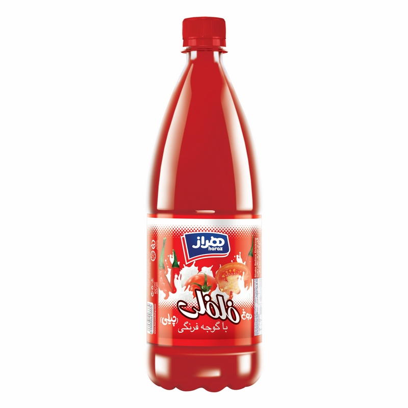

من کلا خیلی علاقه دارم محصولات عجیب و غریب رو تست کنم. چند وقت پیش دیدم یه محصولی وجود داره به نام دوغ چیلی فلفلی با گوجه فرنگی هراز و خب اولین کاری که انجام دادم این بود که تو سوپرمارکت اسنپ بگردم ببینم جایی داره که سفارش بدم یا نه. هیچ سوپرمارکتی نداشت. حتی تو جاهای مختلف شهر که داشتم راه میرفتم بازم سرچ کردم که ببینم توی اون محدوده وجود داره یا نه. کلا هیچ جایی نداشت! تو گوگل که سرچ کنید، سایت های متفرقه زیادی میاره ولی اونایی که من چک کردم ناموجود بودند.

بعد در حین جستجو دیدم یه چیزی به نام دوغ لیموناد و آبمیوه گوجه فرنگی سنایچ هم داریم. تو ویدئو کومان هم دیدم بیسکویت توریستی آناتا هم داریم که تا مرحله نیمه نهایی مقایسه بالا رفت و من حتی اسمش رو هم نشنیده بودم. تو ویدئو قبلی کومان هم چیپس ها با طعم های عجیب رو داشتند تست میکردند (البته هیچ کدوم تو ایران پیدا نمیشه). اگر جمله اول این پست رو دوباره بخونید متوجه میشید که دیگه داشتم روانی میشدم که نمیتونم اینها رو تست کنم! این شد که گفتم تو کل سوپرمارکت های اسنپ تهران میگردم ببینم کجا این موارد بالا رو داره. نکته هم اینه که مثلا دیجیکالا بعضی از این ها رو داره و بعضی رو نداره. حوصله طی شدن روند پردازش کالا دیجیکالا رو هم نداشتم. یا مثلا خیلی مسخره میشه که یه دونه دوغ یا شکلات بزنی از یه سایتی برات بیارن. حضوری خرید کردن برام ساده تر بود فقط آدرس میخواستم. بعد گفتم حالا که دارم دیتای سوپرمارکت ها رو جمع میکنم، فقط دنبال ۴ تا محصول خاص نگردم. اطلاعات بیشتری استخراج کنم. یه اسکریپت گذاشتم و با سرعت پایین (که اختلالی در سایت به وجود نیاره) در طول ۳ روز دیتا رو جمع کردم. حالا بریم یکسری تحلیل ریز روی این دیتا داشته باشیم.
کدوم سوپرمارکت بیشترین تنوع رو تو هر دسته بندی داره؟
جدول زیر نشون میده برای هر دستهبندی (مثلا شیر، شکلات و …) کدوم سوپرمارکته که بیشترین تنوع رو داره. مثلا وقتی یه سوپرمارکتی ۲۰ مدل شیر داره و بقیه سوپرمارکت ها ۵ مدل دارند، این یعنی سوپرمارکت مورد نظر ما بیشترین تنوع رو تو دستهبندی شیر داره.
| دسته بندی | نام | تعداد محصول | محله | لینک سوپرمارکت | |
|---|---|---|---|---|---|
| 0 | چای | سوپرمارکت سنتر هدایت (شریعتی) | 112 | دروس | Link |
| 1 | بستنی و فالوده | سوپرمارکت تست پالیز | 145 | بوستان ولایت | Link |
| 2 | چیپس، پفک، پاپکورن | باران P.O.S (همواره تخفیف) | 268 | شهرک گلستان | Link |
| 3 | ویفر | سوپرمارکت سنتر هدایت (شریعتی) | 97 | دروس | Link |
| 4 | آدامس و خوشبوکننده دهان | سوپرمارکت هدایت (دروس) | 168 | دروس | Link |
| 5 | دوغ | سوپرمارکت کوهسار( بلوار ارتش) | 50 | شهرک البرز | Link |
| 6 | کیک و کلوچه | سوپرمارکت تست پالیز | 161 | بوستان ولایت | Link |
| 7 | آب معدنی، طعمدار و گازدار | سوپرمارکت هدایت (دروس) | 119 | دروس | Link |
| 8 | بیسکویت | سوپرمارکت سنتر هدایت (شریعتی) | 233 | دروس | Link |
| 9 | شکلات | سوپرمارکت میلاد (اقدسیه) | 271 | كاشانک | Link |
| 10 | پنیر | سوپرمارکت خورشید (دروازه شمیران) | 184 | دروازه شميران | Link |
| 11 | شیر | سوپرمارکت کوهسار( بلوار ارتش) | 119 | شهرک البرز | Link |
| 12 | آجیل، چیپس میوه | سوپرمارکت تابستان 93 (امیر کبیر) | 90 | گلستان شرقی | Link |
| 13 | آبنبات و تافی | سوپرمارکت سنتر هدایت (شریعتی) | 51 | دروس | Link |
| 14 | شربت | سوپرمارکت کوهسار( بلوار ارتش) | 39 | شهرک البرز | Link |
| 15 | کشک | سوپرمارکت سنتر هدایت (شریعتی) | 23 | دروس | Link |
| 16 | آبمیوه | سوپرمارکت کوهسار( بلوار ارتش) | 283 | شهرک البرز | Link |
| 17 | فرآورده های قهوه | سوپرمارکت میلاد (اقدسیه) | 281 | كاشانک | Link |
| 18 | نوشیدنی انرژیزا | سوپرمارکت شبانه روزی گلدن استور (ساقدوش-هروی) | 83 | مبارك آباد – حسين آباد | Link |
| 19 | پاستیل و مارشمالو | سوپرمارکت یاران دریان رشیدی (بلوار کاج) | 98 | گلستان شرقی | Link |
| 20 | کره | سوپرمارکت تست پالیز | 32 | بوستان ولایت | Link |
| 21 | نوشابه | سوپرمارکت هدایت (دروس) | 112 | دروس | Link |
| 22 | خامه | سوپرمارکت تست پالیز | 36 | بوستان ولایت | Link |
| 23 | ماست | وال مارکت نازی آباد (همواره تخفیف) | 94 | نازی آباد | Link |
| 24 | دمنوش | سوپرمارکت شبانه روزی گلدن استور (ساقدوش-هروی) | 58 | مبارك آباد – حسين آباد | Link |
| 25 | ماءالشعیر | سوپرمارکت کوهسار( بلوار ارتش) | 123 | شهرک البرز | Link |
| 26 | غلات برشته و صبحانه | سوپرمارکت جام جم (جردن) | 85 | امانيه | Link |
| 27 | لبنیات گیاهی | سوپرمارکت میلاد (اقدسیه) | 28 | كاشانک | Link |
| 28 | عرقیات | سوپرمارکت سنتر هدایت (شریعتی) | 28 | دروس | Link |
| 29 | سایر تنقلات | سوپرمارکت آتی (آتی ساز) | 17 | سعادت آباد | Link |
| 30 | آلوچه و لواشک | سوپرمارکت تابستان 93 (امیر کبیر) | 33 | گلستان شرقی | Link |
پرتکرار ترین محصول تو هر دسته بندی چیه؟
جدول زیر نشون میده تو هر دسته بندی، کدوم محصوله که بیشتر سوپرمارکت ها اون رو دارند.
| دسته بندی | نام محصول | تعداد سوپرمارکت ها | |
|---|---|---|---|
| 0 | چای | چای ممتاز هندوستان گلستان (500 گرم) | 537 |
| 1 | بستنی و فالوده | بستنی ویفرنا زعفرانی میهن 75 گرمی | 449 |
| 2 | چیپس، پفک، پاپکورن | اسنک کرانچی تند و آتشین چی توز 95 گرمی | 611 |
| 3 | ویفر | ویفر کرم دار کاراملی رنگارنگ مینو 14 گرمی | 575 |
| 4 | آدامس و خوشبوکننده دهان | آدامس نعنا بدون قند بایودنت 12 عددی | 447 |
| 5 | دوغ | دوغ بدون گاز نعنایی گرمادیده عالیس 1.5 لیتری | 485 |
| 6 | کیک و کلوچه | کیک کشمشی درنا 70 گرمی | 546 |
| 7 | آب معدنی، طعمدار و گازدار | آب گازدار کریستال 1 لیتری | 368 |
| 8 | بیسکویت | بیسکویت کرم دار ساقه طلایی مینو 192 گرمی | 593 |
| 9 | شکلات | کرم کاکائو فرمند 40 گرمی | 476 |
| 10 | پنیر | پنیر لبنه پرچرب کاله 350 گرمی | 583 |
| 11 | شیر | شیر پرچرب مدت دار میهن 200 میلی لیتری | 466 |
| 12 | آجیل، چیپس میوه | بادام زمینی سرکهای مزمز 35 گرمی | 592 |
| 13 | آبنبات و تافی | تافی شیری رویتال دراژه (40 گرم) | 200 |
| 14 | شربت | شربت آلبالو سن ایچ (780 میلی لیتر) | 337 |
| 15 | کشک | کشک مایع شیشه ای سمیه (650 گرم) | 504 |
| 16 | آبمیوه | نوشیدنی گازدار لیموناد زمزم 1 لیتری | 521 |
| 17 | فرآورده های قهوه | پودر قهوه فوری گلد نسکافه (100 گرم) | 525 |
| 18 | نوشیدنی انرژیزا | نوشیدنی انرژی زا MFP هایپ 250 میلی لیتری | 609 |
| 19 | پاستیل و مارشمالو | پاستیل میوه ای ماری شیبا 90 گرمی | 353 |
| 20 | کره | کره حیوانی شکلی 50 گرمی | 467 |
| 21 | نوشابه | نوشابه پرتقالی فانتا 1.5 لیتری | 736 |
| 22 | خامه | خامه نیم چرب پاک 100 گرمی | 418 |
| 23 | ماست | ماست همزده پرچرب سون کاله 2.2 کیلوگرمی | 370 |
| 24 | دمنوش | دمنوش نعنا کیسه ای مهرگیاه (14 عدد) | 179 |
| 25 | ماءالشعیر | ماءالشعیر لیمو بهنوش (330 میلی لیتر) | 547 |
| 26 | غلات برشته و صبحانه | غلات صبحانه شکلاتی بالشتی چی فلکس چی توز 90 گرمی | 429 |
| 27 | لبنیات گیاهی | شیرفندق بدون قند نیچرلین (یک لیتر) | 160 |
| 28 | عرقیات | گلاب ربیع 430 میلی لیتری | 390 |
| 29 | سایر تنقلات | نی شیر موزی جادویی پیکولا (5 عدد) | 129 |
| 30 | آلوچه و لواشک | لواشک پذیرایی چندمیوه خشکپاک (300 گرم) | 244 |
کدوم سوپرمارکت ها بیشترین محصولات خاص رو داشتند؟
اول باید محصول خاص رو تعریف کنم. منظور از محصولات خاص، محصولاتی هستند که کمتر سوپرمارکتی اونها داره. نحوه پیدا کردنشون هم اینجوریه که اول تعداد تکرار هر محصول رو تو تمام سوپرمارکت ها پیدا میکنیم. یعنی بعد از این مرحله مثلا متوجه میشیم ۵۰۰ تا سوپرمارکت ساقه طلایی رو داشتند. یا مثلا فقط ۱ سوپرمارکت، بیسکویت فلان رو داشته. الان اینجا بیسکویت فلان، یه محصول خاصه. چرا؟ چون بین تمام سوپرمارکت های موجود در اسنپ، فقط همین یه دونه سوپرمارکت بوده که این بیسکویت رو داشته.
حالا اون محصولاتی که فقط در ۱ سوپرمارکت موجود بودند رو انتخاب میکنم و یه جایی ذخیره میکنم. مثلا فرض کنید ۳۰۰۰ تا محصول پیدا شده که فقط ۱ سوپرمارکت اون رو داشته. حالا میخوام بدونم کدوم سوپرمارکت، بیشترین تعداد از این محصولات خاص رو داشته. چون تعداد کل سوپرمارکت هایی بررسی شده ۷۱۹ تا بوده. خب وقتی ۳۰۰۰ تا محصول پیدا شده که فقط ۱ سوپرمارکت اونها رو داشته، یعنی سوپرمارکت هایی وجود دارند که چند تا از این ۳۰۰۰ محصول خاص رو به فروش میرسونن. جدول زیر سوپرمارکت هایی رو نشون میده که بیشترین تعداد محصولا خاص رو داشتند :
| کد سوپرمارکت | نام سوپرمارکت | تعداد محصول خاص | محله | لینک | |
|---|---|---|---|---|---|
| 0 | 0jnqng | سوپرمارکت هدایت (دروس) | 288 | دروس | Link |
| 1 | 0jjr8g | باران P.O.S (همواره تخفیف) | 205 | شهرک گلستان | Link |
| 2 | 0gko1m | سوپرمارکت تست پالیز | 179 | بوستان ولایت | Link |
| 3 | 3de5rw | سوپرمارکت شکلات نیکا (اکباتان) | 90 | اكباتان | Link |
| 4 | 0wz5gv | سوپرمارکت کامو (سردار جنگل شمالی) | 75 | المهدی | Link |
| 5 | pvqjr5 | سوپرمارکت مریم (امازاده جعفر) | 52 | باغ فيض | Link |
| 6 | 3xrz69 | سوپرمارکت ون مارت (تهرانپارس) | 47 | تهران پارس غربی | Link |
| 7 | 3×1974 | سوپرمارکت میلاد (اقدسیه) | 45 | كاشانک | Link |
| 8 | 0jjrlq | سوپرمارکت دیدمارکت (باشگاه انقلاب) | 43 | آرارات | Link |
| 9 | 0mj1eq | سوپرمارکت جردن قدیم (جردن) | 41 | امانيه | Link |
| 10 | 09y64y | سوپرمارکت یاران دریان لوکس (گیشا) | 41 | كوی نصر | Link |
| 11 | 0rvdvv | سوپرمارکت آتی (آتی ساز) | 40 | سعادت آباد | Link |
| 12 | 3d7jyg | سوپرمارکت فرهنگیان(بهارستان) | 37 | ایران | Link |
| 13 | 37y94n | سوپرمارکت خورشید (دروازه شمیران) | 37 | دروازه شميران | Link |
| 14 | 0wwxo8 | سوپرمارکت کوهسار( بلوار ارتش) | 33 | شهرک البرز | Link |
| 15 | 0m1wxv | سوپرمارکت 49 (نارمک) | 31 | هفت حوض | Link |
nb.neighbours()
| title | date | |
|---|---|---|
| prev | الملک، تحلیل لحظهای بازار مسکن | ۱۴۰۲/۰۹ |
| next | تپهنوردی یک کوماندو در تپههای توپیالند! | ۱۴۰۲/۱۰ |